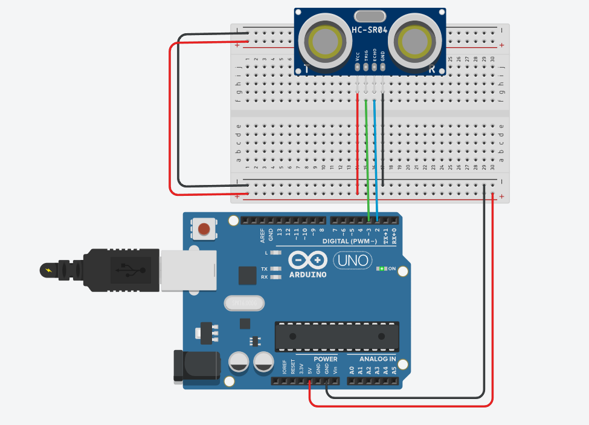

Ультразвуковий парктронік з сонаром HC-SR04 та базером
Справжній автомобільний радар виявлення перешкод. Випромінюйте ультразвукові імпульси частотою 40 кГц, вимірюйте час польоту відлуння (Time of Flight) з точністю до мікросекунд та генеруйте динамічний звуковий сигнал тривоги.
🦇 Як кажани та датчик HC-SR04 «бачать» темряву?
Модуль HC-SR04 складається з двох круглих капсулів: лівий — це ультразвуковий гучномовець (Trig), а правий — чутливий мікрофон (Echo). Плата посилає звуковий імпульс 40 000 Гц, який людина не чує. Звук летить у повітрі зі швидкістю 343 м/с, відбивається від стіни й повертається назад. Поділивши час польоту на два, мікроконтролер обчислює точну відстань до міліметра!
Схеми підключення: HC-SR04, базер та світлодіодна шкала

Пін Trig підключено до цифрового виходу D9, пін Echo — до входу D10. П'єзобазер підключено до D8, а сигнальні діоди — до D7, D6, D5.
Переміщуйте віртуальну перешкоду та слухайте відлуння
Змінюйте відстань повзунком: дивіться на розрахунок часу ToF та частоту піщалка базера
💡 Коли дистанція менша за 15 см, базер переходить у безперервний аварійний писк частотою 2500 Гц, а червоний світлодіод миготить.
Чекліст деталей для збірки парктроніка
Модуль HC-SR04
1 шт. • Сонар 40 кГцДальність дії: 2–400 см, кут випромінювання: 15 градусів.
П'єзодинамік (Buzzer)
1 шт. • Пасивний (Passive)Підтримує генерацію частотних тонів функцією tone(pin, freq).
Світлодіоди 5мм
3 шт. • Зелений, Жовтий, ЧервонийОптична шкала наближення: Зелений (D7), Жовтий (D6), Червоний (D5).
Резистори 220 Ом
3 шт. • СтрумообмежувачіДля безпечного струму кожного з трьох індикаторних світлодіодів.
Arduino UNO R3
1 шт. • КеруванняМікроконтролер обчислює тривалість імпульсу функцією pulseIn().
Макетка та з'єднувачі
1 шт. • BreadboardПровідники папа-мама та папа-папа для монтажу модуля.
Формула обчислення відстані за звуковим відлунням
Швидкість звуку у сухому повітрі при температурі 20°C становить приблизно 343 метри на секунду (або 0.0343 см за 1 мікросекунду).
Відстань (см) = (Час польоту t_us * 0.0343) / 2 = t_us / 58.2
Чому ми ділимо на 2? Тому що ультразвукова хвиля проходить шлях двічі: спочатку від датчика до перешкоди, а потім після відбиття назад до мікрофона!
Скетч розумного парктроніка з динамічним зумером
// SimpleArduino — Проєкт #05: Ультразвуковий парктронік з сонаром HC-SR04
// Розрахунок дистанції через pulseIn() та звукова тривога через tone()
const int TRIG_PIN = 9; // Вихід запуску ультразвукового імпульсу
const int ECHO_PIN = 10; // Вхід прийому відбитого сигналу (Time-of-Flight)
const int BUZZER_PIN = 8; // Вихід на п'єзодинамік
const int LED_GREEN = 7; // Зелений світлодіод (Безпечно > 50 см)
const int LED_YELLOW = 6; // Жовтий світлодіод (Увага 20-50 см)
const int LED_RED = 5; // Червоний світлодіод (Небезпечно < 20 см)
void setup() {
pinMode(TRIG_PIN, OUTPUT);
pinMode(ECHO_PIN, INPUT);
pinMode(BUZZER_PIN, OUTPUT);
pinMode(LED_GREEN, OUTPUT);
pinMode(LED_YELLOW, OUTPUT);
pinMode(LED_RED, OUTPUT);
Serial.begin(9600);
digitalWrite(TRIG_PIN, LOW);
}
void loop() {
// 1. Формуємо короткий імпульс запуску тривалістю строго 10 мікросекунд
digitalWrite(TRIG_PIN, LOW);
delayMicroseconds(2);
digitalWrite(TRIG_PIN, HIGH);
delayMicroseconds(10);
digitalWrite(TRIG_PIN, LOW);
// 2. Вимірюємо тривалість сигналу HIGH на піні Echo (у мікросекундах)
// Таймаут 30000 мкс (якщо перешкоди немає на дистанції до 4 метрів)
long duration = pulseIn(ECHO_PIN, HIGH, 30000);
// 3. Обчислюємо дистанцію в сантиметрах
long distanceCm = duration * 0.0343 / 2;
// Якщо датчик не отримав відлуння (поза зоною досяжності)
if (distanceCm == 0 || distanceCm > 300) {
distanceCm = 300;
}
Serial.print("Distance: ");
Serial.print(distanceCm);
Serial.println(" cm");
// 4. Логіка керування світлодіодами та звуком парктроніка
if (distanceCm > 50) {
// Безпечна зона
digitalWrite(LED_GREEN, HIGH);
digitalWrite(LED_YELLOW, LOW);
digitalWrite(LED_RED, LOW);
noTone(BUZZER_PIN);
delay(200);
} else if (distanceCm >= 20 && distanceCm <= 50) {
// Зона уваги: переривчастий писк
digitalWrite(LED_GREEN, LOW);
digitalWrite(LED_YELLOW, HIGH);
digitalWrite(LED_RED, LOW);
tone(BUZZER_PIN, 1800); // 1800 Гц
delay(60);
noTone(BUZZER_PIN);
delay(map(distanceCm, 20, 50, 80, 300)); // Чим ближче, тим частіші біпи
} else {
// Критична зона (< 20 см): безперервний або частий аварійний сигнал
digitalWrite(LED_GREEN, LOW);
digitalWrite(LED_YELLOW, LOW);
digitalWrite(LED_RED, HIGH);
tone(BUZZER_PIN, 2600); // Пронизливий сигнал тривоги
delay(40);
noTone(BUZZER_PIN);
delay(40);
}
}Матриця типових несправностей
Датчик завжди повертає 0 см або 3000 см
Перевірте правильність з'єднання пінів Trig та Echo: якщо переплутати їх місцями, датчик ніколи не випромінить тестовий пакет. Також переконайтеся, що VCC підключено строго до 5V, а не до 3.3V.
Датчик не бачить м'які предмети (штори, подушки, вовну)
Це не баг, а закони фізики акустики! М'які та пористі матеріали поглинають ультразвукові коливання 40 кГц замість відбиття. Для надійного тесту використовуйте плоскі тверді поверхні (книгу, картон, долоню).
Базер лише глухо клацає і не видає звук
Ви підключили активний базер замість пасивного, або підключили базер без дотримання полярності (+ на пін, - на GND).
Програма підвисає на 1 секунду кожне коло
Виклик pulseIn(ECHO_PIN, HIGH) за замовчуванням має таймаут 1 000 000 мікросекунд (1 повна секунда). Обов'язково передавайте третій аргумент: pulseIn(ECHO_PIN, HIGH, 30000) (30 мс).
Перевірте себе: чому взимку на морозі датчик відстані починає трохи брехати?
Оберіть єдину науково точну причину похибки вимірювання сонара: